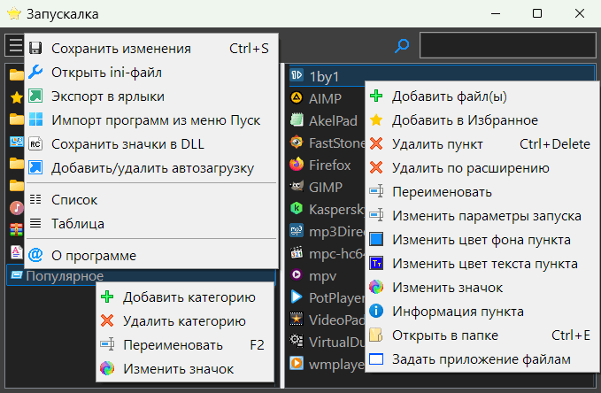

LauncherLV
Назначение
Запускалка программ в виде ListView.

Взаимосвязанные
LauncherPB
LauncherCLE
Launcher (устаревшая версия).
Работа с программой
Как пользоваться программой:
- Запустить программу и перетащить ярлыки или exe-файлы в окно программы.
- Клик на пункте запускает исполняемый файл.
- В левой части окна пристуствуют категории, по которым можно распределить программы.
А теперь детали:
- Меню кнопки
 Сохранить изменения - Сохраняет программы в ini-файл.
Сохранить изменения - Сохраняет программы в ini-файл. Настройки - Открывает LLVSetting.exe - конфигуратор ini-файла.
Настройки - Открывает LLVSetting.exe - конфигуратор ini-файла.- Открыть ini-файл - Открывает в редакторе для ручной правки.
- Экспорт в ярлыки - Преобразует данные в ярлыки, в указанную папку. В Windows10 и ниже это позваоляет создать из папки панель - раскрывающееся меню на панели задач.
- Импорт программ из меню Пуск - Преобразует ярлыки из меню Пуск в раздел Programs. Берётся из папки пользователя и из папки для всех пользователей.
- Сохранить значки в DLL - Создаёт icons.dll, чтобы увеличить скорость запуска программы. После выполнения требуется сохранить конфиг Ctrl+S. В ini-файл добавятся icon = icons.dll и IndexIcon = номер иконки.
- Добавить/удалить в автозагрузку - Создаёт ярлык в главном меню Пуск в папке автозагрузки и программа запускается при старте ОС.
- Справка - Открывает файл LauncherLV.chm. Этот пункт скрыт, если файла нет.
- Меню списка программ (после изменений требуется сохранение ini-файла)
- Добавить файл(ы) - Кроме перетащить и бросить можно использовать диалог открытия файлов.
- Добавить в Избранное - Дополнительно добавляет пункт в категорию Избранное.
 Удалить - Удаляет пункт.
Удалить - Удаляет пункт.- Удалить по расширению - Удаляет пункты с указанным расширением в указанной категории.
- Переименовать - Переименовывает.
- Изменить параметры запуска - Для просмотра или изменения параметра запуска программы.
- Изменить цвет фона пункта - Работает для отдельного пункта.
- Изменить цвет текста пункта - Работает для отдельного пункта.
- Изменить значок - Открывает диалог выбора файла (dll) и далее диалог выбора значков. Сохраняет в icon и IndexIcon.
 Информация пункта - Показывает данные путь, параметры.
Информация пункта - Показывает данные путь, параметры. Открыть в папке - Открывает папке с исполняемым файлом и выделяет сам файл.
Открыть в папке - Открывает папке с исполняемым файлом и выделяет сам файл. Задать приложение файлам - перемещает значение path= в argument=, а в path= вставляется заказное приложение для указанных расширений файла.
Задать приложение файлам - перемещает значение path= в argument=, а в path= вставляется заказное приложение для указанных расширений файла.
- Меню категорий (после изменений требуется сохранение ini-файла)
- Добавить категорию - Добавляется категория, в которую можно добавить программы.
- Удалить категорию - Удаляет категорию, а во всех пунктах очищается привязка к этой категории.
- Переименовать - Переименовывает.
- Изменить значок - Открывает диалог выбора файла (dll) и далее диалог выбора значков.
- Меню трея по ПКМ
- Показать окно - Показывает окно ранее скрытое.
- Выход - Завершает программу.
- Меню трея по ЛКМ
- Папки - Если разрешено меню программ, то по левому клику отображается оно, иначе меню ПКМ.
Параметры ком-строки
Первый параметр - путь к конфигурационному файлу
Второй параметр - флаг, который может быть комбинацией значений:
1 - принудительно инвертировать разрядность текущей ОС (x64 или x86), чтобы проверить какие программы будут отображаться на другой битности ОС
2 - принудительно инвертировать WinPE, чтобы проверить какие программы будут отображаться на другом типе ОС
4 - принудительно включить версия ОС Windows 7. Так как большинсто ставят новые версии 10/11, то проверка отображения на младших версиях
Эти флаги используются для теста если в параметре hide в программах задан флаг скрывающий эти программы.
Параметры ini-файла
[Main]- основные настройки поведения
win_width=400 - Ширина окна
win_height=400 - Высота окна
split_1=200 - Положение разделителя между списками категорий и программ
sel_category=1 - Выбранная категория при старте.
min_to_tray=1 - При сворачивании окна оно скрывается и программа остаётся в трее
close_to_tray=1 - При закрытии окна оно скрывается и программа остаётся в трее, иначе стандартный выход из программы (удобно настраивать и тестить при =0)
run_to_tray=0 - Если 1, то при запуске программы автоматически скрывает окно и программа висит в трее готовая для выбора программ из меню трея
aft_run=0 - Что делать после запуска программы: 0 - ничего, 1 - скрыть в трей, 2 - выход
double_click=1 - Двойной клик для запуска файла
CreateTrayMenuProg=1 - Создать меню программ в трее
mask=exe,lnk - При добавлении нескольких файлов или папок определяет список разрешённых файлов по расширению
masklnk=exe - При добавлении ярлыков определяет список разрешённых файлов, на который ссылается ярлык
AutoAddCtgr=1 - Автоматически добавляет категории, если они указаны для программы, но не указана категория.
HotkeyShow=Ctrl+Space - Горячая клавиша показа окна.
font_size=0 - Размер шрифта, если вне диапазона 9-22, то используется системный размер
font_name=Arial - Имя шрифта, работает только при заданном font_size в пределах 9-22
ThemeName=ColorBlack - Выбранная тема оформления, смотрите ниже.
single_instance=0 - Если 0, то можно запустить программу несколько экземпляров, иначе только один экземпляр.
icon=icon.ico - Иконка программы, если не устраивает стандартная.
IndexIcon=0 - Индекс иконки программы. Для "ico" всегда 0, для "exe" чаще всего 0, для dll уже выбор иконок в ресурсах.
sort=1 - Сортировать программы в списке.
Темы
[ColorBlack] - Одна из тем оформления
color=1 - Отключает Callback-функцию, которая подсвечивает пункты индивидуально
BlackTheme=1 - Включает или отключает чёрную тему (некоторые дополнительные улучшения)
bgWin=3f - Цвет фона окна
background=222222 - Цвет фона (формат: шестнадцатеричный RGB, веб цвета)
foreground=aaaaaa - Цвет текста — // —
SelRectColor=0078D4 - Цвет границ прямоугольника выделенного пункта
SelBGColor=1B374E - Цвет фона выделенного пункта
SelFGColor=c - Цвет текста выделенного пункта
FavColor=FF8080 - Цвет текста пункта из Избранного
Цвет может быть задан упрощённо, например "F" означает "FFFFFF", "3F" = "3F3F3F", "F95" = ""FF9955"
Категории
[Category] - список категорий
Windows= - Имя категории и назначенная ей иконка.
Игры=
Интернет=Shell32.dll,13
Музыка=Shell32.dll,128
Офисные=
Системные=
Кнопки
[p6] - одна секция одна программа, с индексом, в данном случае 6. Генерируется автоматически без дубликатов.
name=Калькулятор - Имя программы. Берётся из имени файла
path=C:\Windows\System32\calc.exe - Полный путь к программе
argument=/s - Параметры запуска программы
category=Windows - Категория, должна быть в секции [Category], иначе программы затеряется и будет видна только во "Все" или при поиске.
favorites=1 - 1 означает отображать значок в избранном
bgcolor=222222 - Цвет фона пункта (RGB в веб-формате)
fgcolor=AAAAAA - Цвет текста пункта (RGB в веб-формате)
icon=Shell32.dll - Файл с иконками
IndexIcon=13 - Индекс иконки в файле.
hide=0 - Флаг определяет комбинацию сложением битовых флагов, в каких случаях скрывать программу.
1 - Не показывать программу (x64) в Windows-x86
2 - Не показывать программу (x86) в Windows-x64 (вдруг есть две копии разной разрядности)
4 - Не показывать в ниже 10-ки
8 - Не показывать в WinPE (критерий - ОС на диске X:\)
16 - Не показывать программу от WinPE в обычной Windows (критерий - ОС на диске X:\)